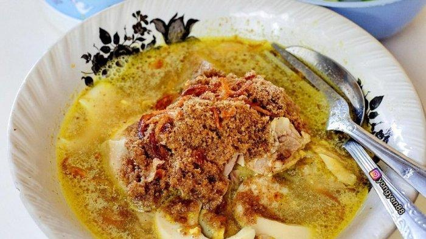
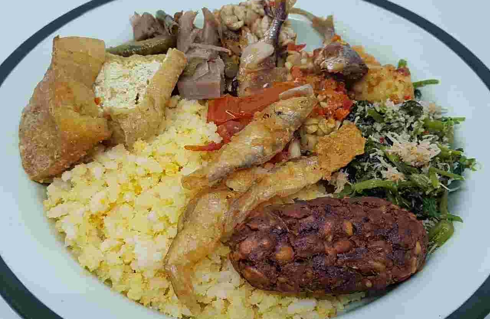
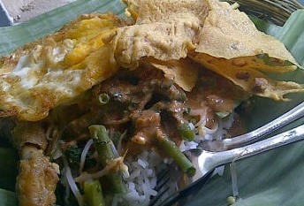

food
- Local foods from Kraksaan -

Soto Koya
Soto Koya is a traditional Indonesian soup mainly composed of broth, meat, vegetables and koya. Koya is one of the accompaniments to soto that is often used in East Java.

Nasi Jagung
Nasi Jagung is rice made from corn, alongside many side dishes to go with it. A popular local breakfast to have in Kraksaan.

Pecel
Pecel is a traditional Javanese salad with peanut sauce, usually eaten with carbs. The simplicity of pecel preparation and its cheap price have contributed to its popularity throughout Java.